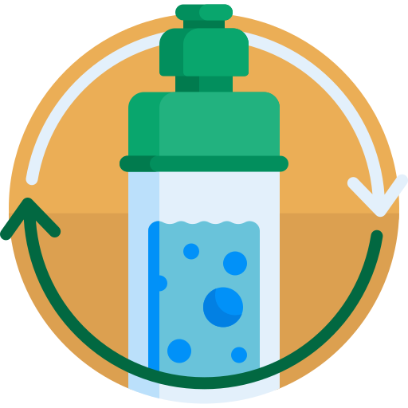

Reduce
What is Reducing?
Reducing is the act of, well, reducing your usage of everything. This can include how much food you buy or how much toothpaste you use. Everything we use (or buy but don't use) ends up as waste polluting the land or sea but there are many small ways to reducing your waste like:
What is Reducing?
Reducing is the act of, well, reducing your usage of everything. This can include how much food you buy or how much toothpaste you use. Everything we use (or buy but don't use) ends up as waste polluting the land or sea but there are many small ways to reducing your waste like:
- Bringing your own bag instead of using a one-use plastic bag
- Replacing most paper with digital documents
- Buying only what you need at the moment or very near future and many more
Reuse
What is Reusing?
Reusing is quite self-explanatory. Keep reusing all of the things you have that you know can still be used. In this day and age, it can be easy to forget that we don't need the brand new thing when what we have still works be it phones, clothes, or other "trendy" items. Although you should note that reusing applies to many more items and categories than just those I identified. Maybe you want to reuse your perfectly usable plastic bag instead of grabbing another at the supermarket.
Repairing, although sometimes grouped separetely as the 4 or 5 R's, is also a part of this category and is arguably more important to spread than reusing. The main message of repairing is that, instead of throwing your broken item away, maybe you, or someone else, can repair your item, saving it from being turned into waste. This can apply to many, many things like electronics and clothing.
What is Reusing?
Reusing is quite self-explanatory. Keep reusing all of the things you have that you know can still be used. In this day and age, it can be easy to forget that we don't need the brand new thing when what we have still works be it phones, clothes, or other "trendy" items. Although you should note that reusing applies to many more items and categories than just those I identified. Maybe you want to reuse your perfectly usable plastic bag instead of grabbing another at the supermarket.
Repairing, although sometimes grouped separetely as the 4 or 5 R's, is also a part of this category and is arguably more important to spread than reusing. The main message of repairing is that, instead of throwing your broken item away, maybe you, or someone else, can repair your item, saving it from being turned into waste. This can apply to many, many things like electronics and clothing.
Recycle

What is Recycling
Recycling is a bit more abstract than the others. A good way to describe it is "repurposing". Essentially, recycling is what would happen if an item can't be repaired or reused. Although this is the category that needs the most thought and time, there are still many ways you could recycle without putting much thought into it.
What is Recycling
Recycling is a bit more abstract than the others. A good way to describe it is "repurposing". Essentially, recycling is what would happen if an item can't be repaired or reused. Although this is the category that needs the most thought and time, there are still many ways you could recycle without putting much thought into it.
- Sending your wastes to scrap yards or salvage yards
- Paper can be recycled in many, many ways so it's good to keep your excess papers and many more
References:
Reducing icons created by Freepik - Flaticon
Zero waste icons created by Freepik - Flaticon
Recyclable icons created by Freepik - Flaticon
Facebook icons created by Freepik - Flaticon
Twitter social badge icons created by Freepik - Flaticon
Youtube icons created by Freepik - Flaticon
Global icons created by Nhor Phai - Flaticon